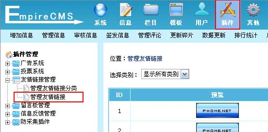
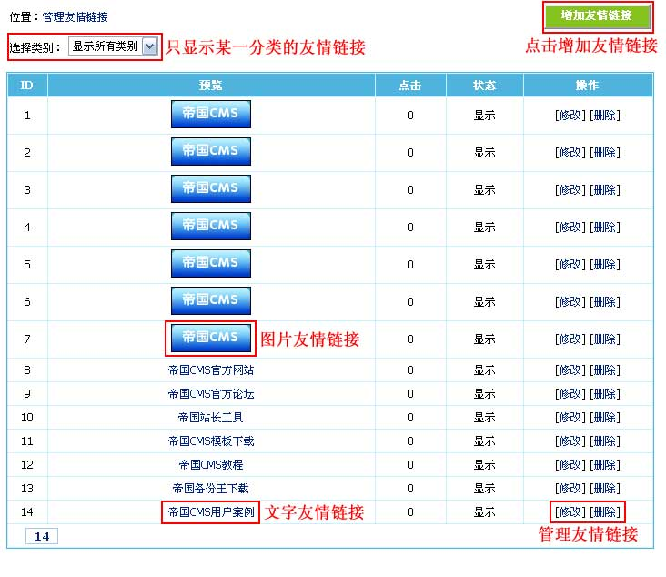
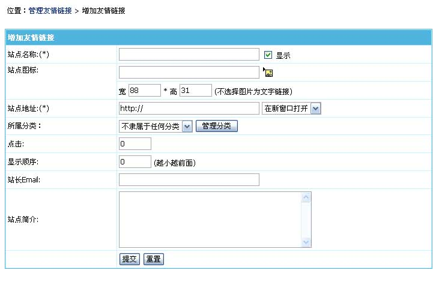
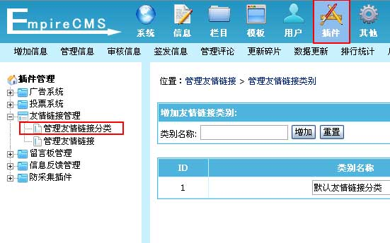
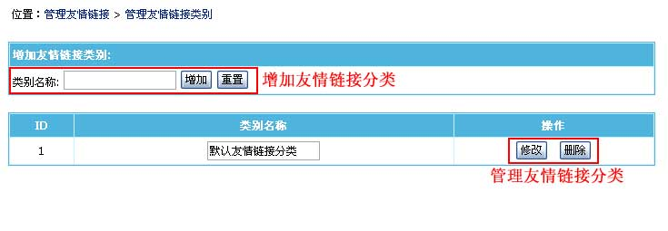

| 通过此功能可管理整个网站的友情链接。 |
|
||
| 一、友情链接系统说明 |
| 前台投票调用方式： |
| 1、用友情链接标签调用（[phomelink]每行显示数,显示总数,操作类型,分类id,是否显示原链接[/phomelink]） |
| 2、还可以用标签SQL调用。下面以灵动标签为例：(其中lname为站点名称字段，lurl为站点地址字段，lpic为站点图标地址字段) |
| <ul class="links_text"> [e:loop={'select lname,lurl,lpic from [!db.pre!]enewslink where checked=1 order by myorder,lid',20,24,0}] <li><a href="<?=$bqr[lurl]?>" target="_blank" ><?=$bqr[lname]?></a></li> [/e:loop] </ul> |
| （按某一分类调用SQL为：select lname,lurl,lpic from [!db.pre!]enewslink where checked=1 and classid=分类ID order by myorder,lid） |
| 二、管理友情链接 |
| 1、登录后台，单击“插件”菜单，选择“管理友情链接”子菜单，进入管理友情链接界面： |
|  |
| 2、进入管理友情链接界面，如下图： |
|  |
| 三、增加友情链接 | ||||||||||||||||||
| 1、从管理友情链接页面点击“增加友情链接”按钮，进入增加友情链接界面，如下图： | ||||||||||||||||||

|
| 四、友情链接分类管理 |
| 对于友情链接较多的站点，后台可设置选择性的显示所属类别中的友情链接，方便管理。前台还可以按对应分类调用友情链接。 |
| 1、登录后台，单击“插件”菜单，选择“管理友情链接分类”子菜单，进入管理友情链接分类界面： |
|  |
| 2、进入管理友情链接分类界面： |
|  |